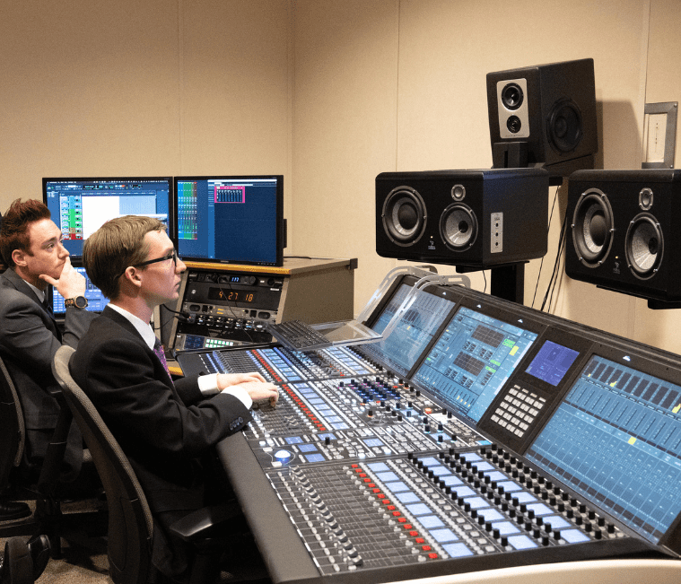

BIO
My name is Michael Michelsen. I am an audio engineer who specializes in recording and post production. I've worked as a
location sound engineer for several productions ranging from 30 second advertisements to full length TV episodes, and as a post
production engineer for projects such as my own album, audiobooks, and even a jazz trio hosted at BYU-Idaho.
I also work as a musician specializing in jazz performance, and a composer specializing in video game music.
I was born and raised in Montana and started playing music from a young age. A couple years later I started learning
trumpet for school and soon grew to love the combination of both listening and playing those instruments. Ever since then I
have expanded my abilities, learning how to play bass, tenor saxophone, and even taking lessons for the harp.
WHAT I DO
In 2020 during the Covid-19 pandemic, I discovered a love for mixing music just as much as playing, if not even more so.
Having studied jazz I had to train my ears to listen closely to music, which in turn helped my ability to mix.
“A good audio engineer has a good ear.”
WHY PICK ME
After getting certified in Pro Tools, the Lawo mc Broadcast Console and Dante Networking, I was granted the opportunity to work
in a studio during my time as a student. Despite having an emphasis in music I was able to expand my abilities as an audio engineer
with film productions, voice over recordings, sports broadcasts, and so much more.
Now based in Idaho, I am available to hire for your composition, performance, recording, or post production needs!
